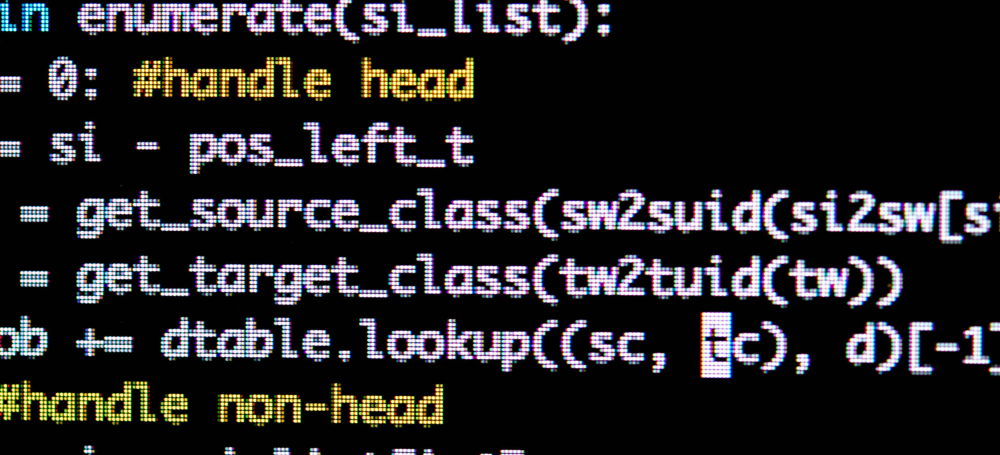

Regression testing, unit tests, Test driven development, automated testing, defensive programming. Despite years in research, these were not terms I had heard, not from my supervisors or peers, nor at conferences, and certainly not in journals or other scientific forums. Yet after working for a few months in UCL's RITS Research Software Development team, a group that emphasises software development to improve Science, I have woken up to the reality that software developers have known for a long time:
"Code without tests is broken by design" - Jacob Kaplan-Moss
Does this mean that all the scientific code written by myself and the hundreds of thousands of other researchers globally that more-or-less ignores testing is useless? Not at all. It does means that the code might not be robust, may be unable to deal with edge cases, and may (probably) hide bugs.
If you have ever tried to re-use a script written to produce data for a specific publication, you will already know that it can take some work to get it to run in a different environment or on different data. But without tests there is know way to even know if the code works the way in which the original authors intended it to.
For anyone interested in getting started with testing (it's never too late), check out the course material from UCL's MPHYG001: Research software Engineering with Python, by the RSD team leader Dr. James Heatherington. There is also nice material from the Test and Code podcast by Brian Okken, including a useful ebook. He can also be heard discussing testing on the excellent Talk Python to Me podcast Episode #45.
After my quick education in testing I would say that intentionally writing code without tests is equivalent actively trying to ignore problems. In a purely software development context this would simply be passing on a technical debt. In the context of Science however, the negative impacts will land on you much more directly. As it's your personal reputation that rests on the credibility of your work. So start testing!
Banner photo credit James Clarke.
Go Top
comments powered by Disqus